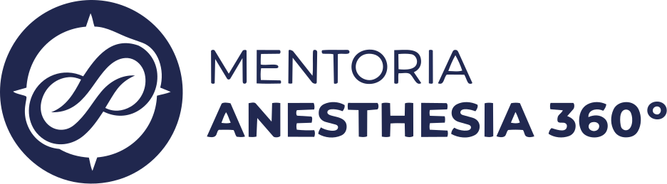
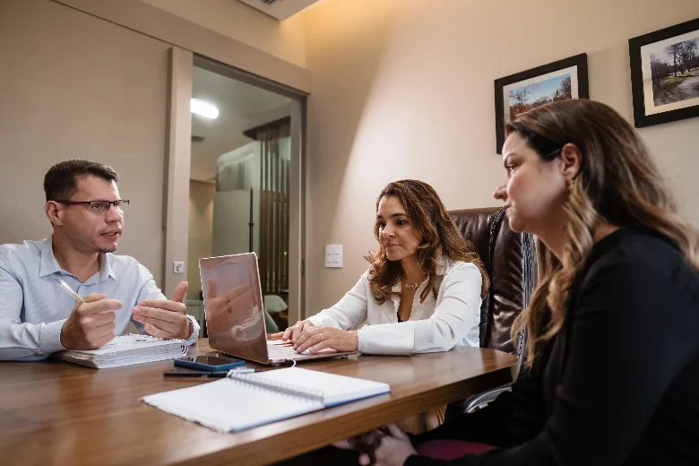

A Mentoria Anestesia 360° foi desenvolvida para anestesiologistas que desejam compreender e estruturar sua atuação extra-hospitalar com mais segurança, organização e visão empresarial.
É atuar em um ambiente diferente, com riscos próprios, responsabilidades compartilhadas e exigências sanitárias que não podem depender do improviso.

Do ambiente extra-hospitalar em si.
Entre anestesiologista e clínica.
Específicas da operação fora do hospital.
O mercado está crescendo. Mas crescer sem estrutura também aumenta a exposição. Antes de realizar uma anestesia fora do hospital, você precisa saber:
Ignorar essas questões não elimina o risco. Apenas faz com que os problemas apareçam diante de uma fiscalização, de um evento adverso, de um conflito contratual ou de uma operação financeiramente insustentável.
A virada de chave acontece quando você entende que anestesia extra-hospitalar não é apenas um ato médico. É uma operação assistencial, sanitária e empresarial.
Quero estruturar minha atuação→A formação está organizada em três pilares fundamentais.
Compreenda as exigências sanitárias, jurídicas e documentais relacionadas à atuação fora do hospital.
Transforme conhecimento técnico em uma operação padronizada, rastreável e reproduzível.
Desenvolva a visão empresarial necessária para tornar a atuação comercialmente organizada e financeiramente sustentável.
Regulamentação traz direção. Processos sustentam a segurança. Gestão torna o crescimento possível.
Aulas com formação completa nos três pilares.
Aula dedicada com especialista no tema.
Convidados renomados de áreas correlatas.
Ao concluir a formação completa.
Direto com os mentores.
Suporte contínuo após a formação.
Comunidade com os mentores.
E conteúdos científicos selecionados.
Acompanhamento próximo durante toda a jornada.
Esta formação não é para quem busca apenas mais um certificado.
É para o anestesiologista disposto a rever processos, estruturar sua atuação e assumir uma posição mais estratégica no mercado.
Encontre respostas rápidas sobre a mentoria, o processo de aplicação e a formação.
Você já domina o ato anestésico.
Agora é hora de dominar a operação.
Faça sua aplicação para a Mentoria Anestesia 360°. Preencha o formulário. Nossa equipe analisará suas informações e entrará em contato para apresentar os próximos passos.
Clique abaixo para acessar o formulário e enviar suas informações para análise.
QUERO FAZER MINHA APLICAÇÃO→